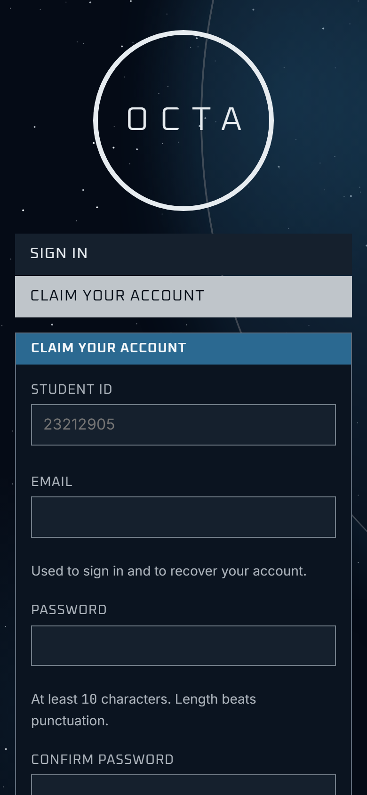
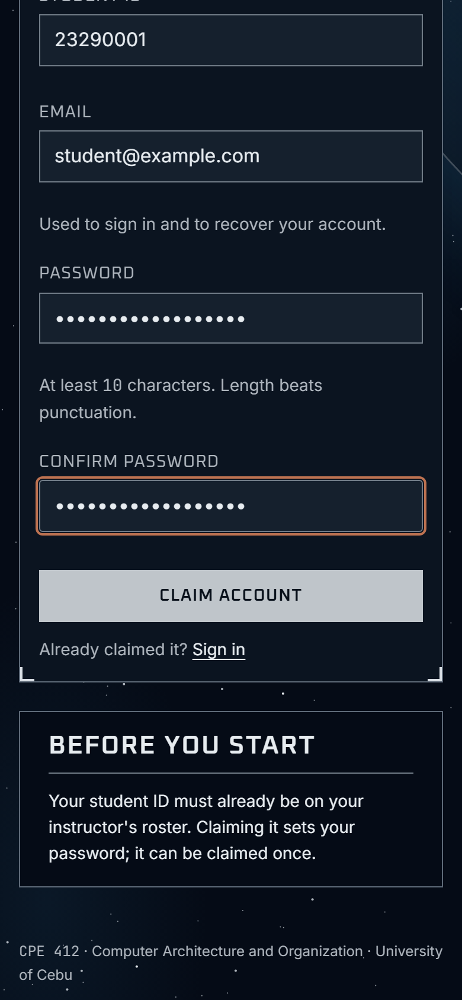
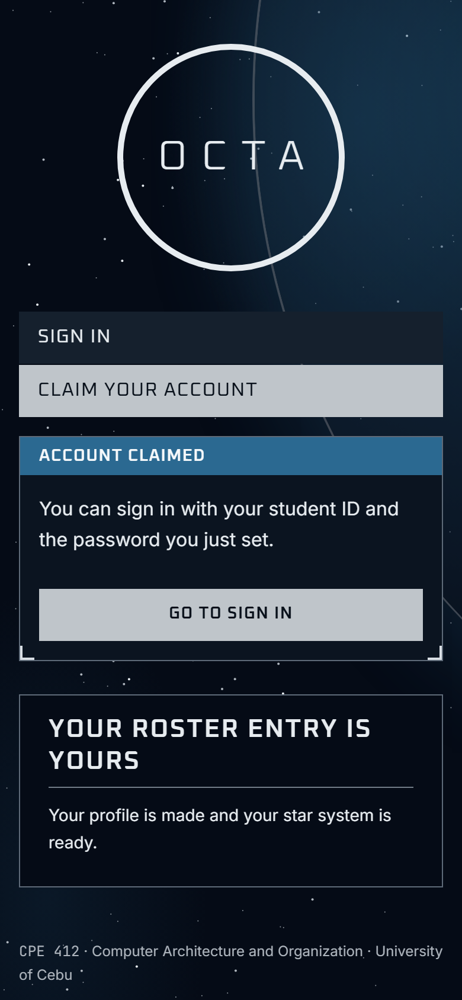
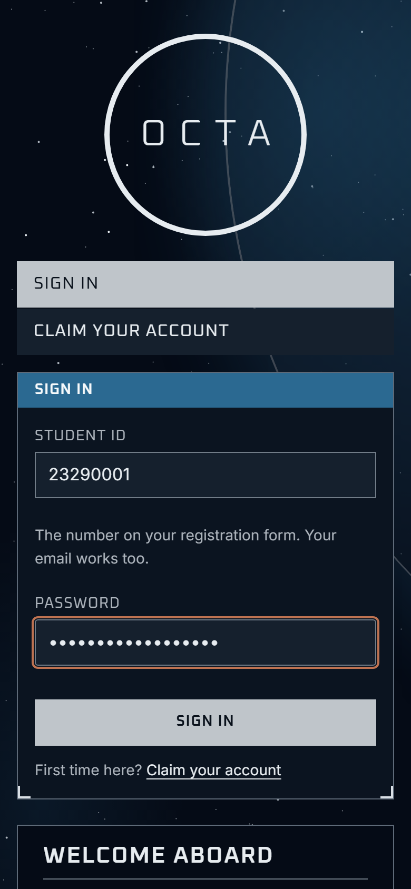
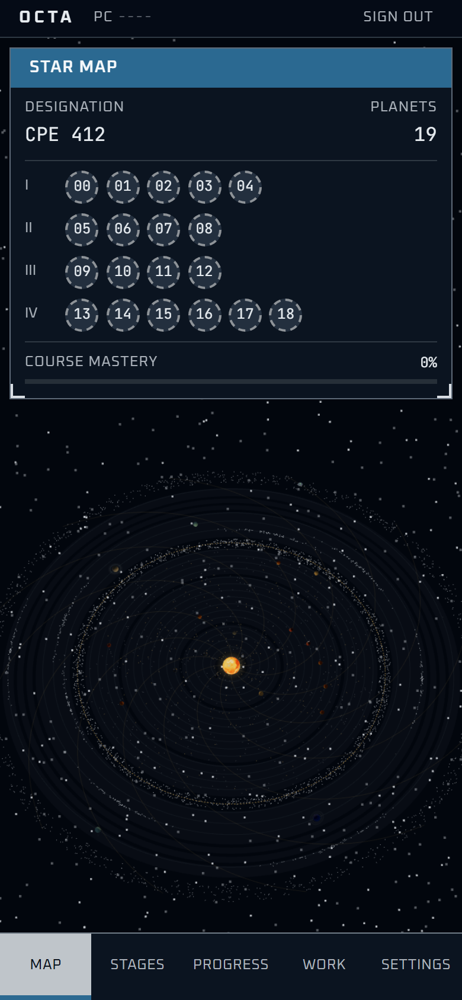
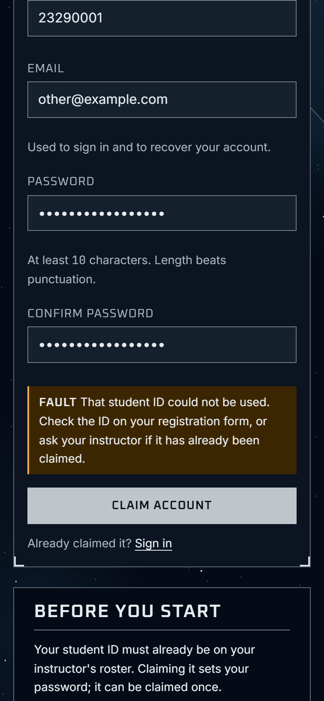

CPE 412 · Computer Architecture and Organization · University of Cebu
Your instructor has already added you to the class roster. Claiming your account takes about two minutes, and you only do it once. After that you sign in with your student ID.
Go to octa-web-dusky.vercel.app on your phone or laptop, and tap Claim your account.

Your student ID, your email, then your password twice. Then tap Claim account.

You will see Account claimed. Tap Go to sign in. No confirmation email is needed.

Enter your student ID (or your email) and the password you just set, then tap Sign in.

Your star system opens: one planet for each chapter of the course. From now on, use Sign in every time.

Your account is yours alone: your answers and checks are graded. Never share your password, and never claim a classmate's ID.
Bookmark the site or add it to your home screen: octa-web-dusky.vercel.app
Sign out on a shared or borrowed computer, from the top right of the map.

That student ID could not be used. Check the ID on your registration form, or ask your instructor if it has already been claimed.